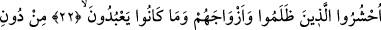
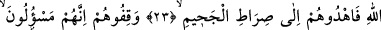
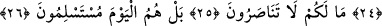
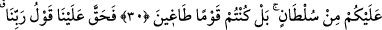
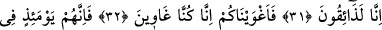
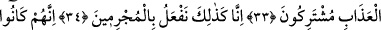
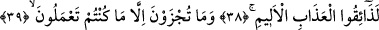

ZÂLİMLER O GÜN
ZİLLETLE BOYUN
EĞECEKLERDİR
22, 23, 24. (Allah, meleklerine emreder:) Zâlimleri, onların aynı yoldaki
arkadaşlarını ve Allah’tan başka tapmış oldukları putlarını toplayın. Onlara
cehennemin yolunu gösterin. Onları tutuklayın, çünkü onlar sorguya çekilecekler!
25. Size ne oldu ki birbirinize yardım etmiyorsunuz?
26. Evet, onlar o gün zilletle boyun eğeceklerdir.
27. (İşte bu duruma düştükleri vakit) onlardan bir kısmı, diğerlerine yönelir,
birbirlerini sorumlu tutmaya çalışırlar.
28. (Uyanlar, uydukları adamlara:) Siz bize sağdan gelirdiniz (sûreti haktan
görünürdünüz) derler.
29, 30. (Ötekiler de:) «Bilâkis, derler, siz inanan kimseler değildiniz. Bizim sizi
zorlayacak bir gücümüz yok. Fakat siz kendiniz azgın bir toplum idiniz.»
31. «Onun için Rabbimizin hükmü bize hak oldu. Biz (hak ettiğimiz cezayı)
mutlaka tadacağız.»
32. «Biz sizi azdırdık. Çünkü kendimiz de azmıştık.»
33. Şüphesiz o gün onlar azapta ortaktırlar.
34. İşte biz, suçlulara böyle yaparız.